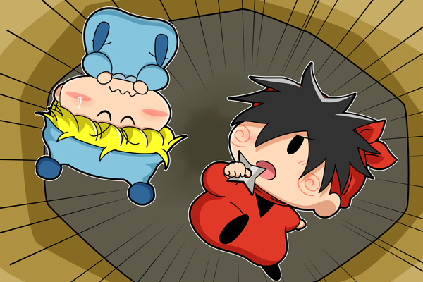

ヤシチ「くそっ、また落とし穴か・・・！
なかなか手ごわいダンジョンだな・・」
ミルモ「ヤシチく～ん？
いつになったらこんなわかりやすい落とし穴に
引っかからずに進めるのかなぁ？」
ヤシチ「う、うるさいっ。
今日は調子が出ないだけなのだ！」
穴に落ちる構図の練習のために描いた絵です。なので、上の二人の会話は後付けで、特に深い意味はなかったりします(^◇^;)。
強いて絵に設定を付けるならば、ガイア族がミル・リル・ムル・ヤシの４人に抜き打ちの特訓を行い（実際のところはガイア族の暇つぶし^^;）、ダンジョンの途中で二手に分かれる場面で、くじ引きで決めたらミルモとヤシチのペアが生まれた…としましょうか（強引）。二人の内、どちらか片方でも罠に引っかかったら落とし穴が作動する仕組みです。いくらヤシチでも落とし穴くらいは見分けが付くかもですが。
もうちょっと遠近法をバリバリ駆使すればよかったかな・・？ これからもいろいろな構図にチャレンジしてお絵描きしていきたいと思います。
(2014/7/30)